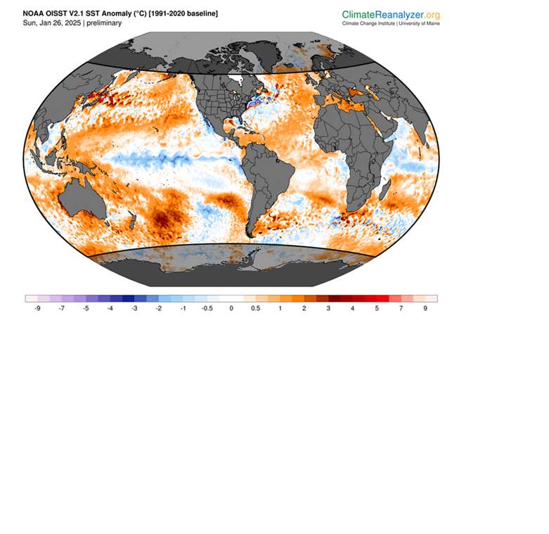
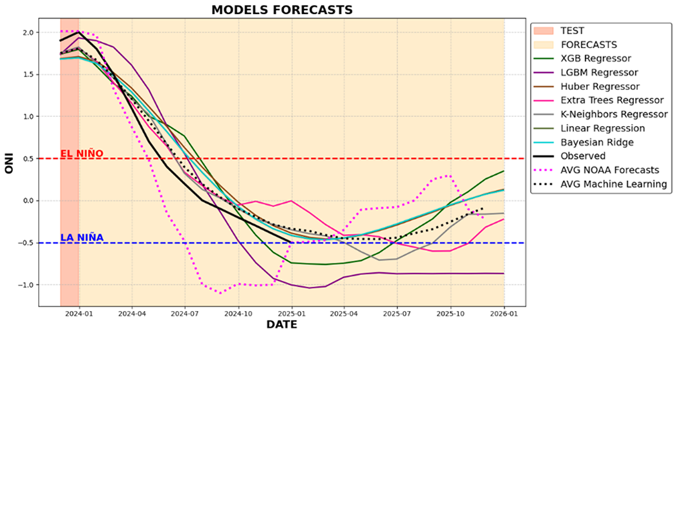
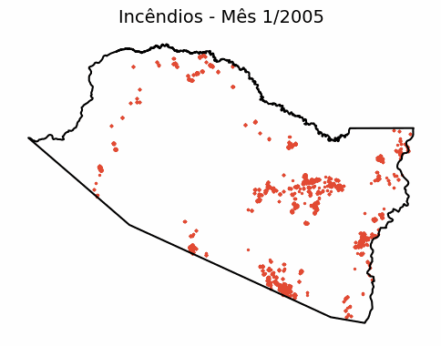
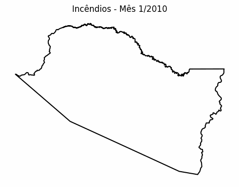

Sobre o Projeto
O SereIA é uma rede distribuída de monitoramento ambiental, composta por núcleos locais que coletam e processam dados hidroclimáticos e florestais na Amazônia. Cada núcleo atua como uma inteligência própria, com ferramentas específicas para análise de previsão de anomalias da temperatura da superfície do mar, variabilidade das chuvas, eventos extremos, vegetação e até o fogo. A plataforma integra essas informações usando baixo custo computacional e recursos em nuvem, como Google Colab, Pacotes em Python, R studio, Matlab, Orange, QGIS, e Git/GitHub, garantindo escalabilidade e integração de dados geoespaciais. Devido à vastidão e diversidade da Amazônia, cada núcleo foca em aspectos regionais prioritários, permitindo uma abordagem inteligente e específica mesmo em regiões remotas e com poucos incentivos em TI.
Os Elementos e Núcleos de Monitoramento
Cada núcleo representa um elemento da natureza, com nome de referência amazônica, monitorando variáveis ambientais específicas.
Central
Mãe d'Água
Servidora central: integra dados de todos os elementos, executa IA e modelos de machine learning, gera painéis regionais e garante a interoperabilidade entre os núcleos.
Ar
Aruá
Inteligência para o monitoramento da interação oceano-atmosfera em larga escala e seus efeitos sobre os eventos de chuva nas sub-bacias amazônicas. Monitora anomalias na temperatura da superfície do mar tropicais e seus efeitos na variabilidade das chuvas na Amazônia. Utiliza machine learning principalmente para previsões de anomalias do tipo ENOS (El Niño Oscilação Sul), Modo Atlântico Equatorial e Dipolo do Atlântico Tropical, fornecendo subsídios para a previsão de eventos hidrológicos extremos regionais.
Água
Iara
Inteligência para o monitoramento de eventos de secas e cheias em todas as 9 sub-bacias amazônicas (Javari, Japurá, Purus, Negro, Trombetas/Uatumã, Madeira, Tapajós, Xingu e Paru/Jari). Analisa chuvas, cotas e vazões em pontos estratégicos, integrando o PDSI (Índice de Severidade de Seca de Palmer) calibrado por sub-bacias. Cada sub-bacia é avaliada individualmente, respeitando seu regime hidrológico único e permitindo retratar a vulnerabilidade hídrica de forma regionalizada.
Terra
Naiá
Inteligência para o monitoramento da saúde da floresta nas sub-bacias do Madeira, Tapajós e Xingu, utilizando dados de satélite MODIS para análise de NDVI, EVI, LAI, além de informações sobre umidade do solo e nas zonas de raízes. Integra dados do satélite GRACE para estimar variabilidade água nos aquíferos e a demanda florestal em anos de secas extremas. Avalia a resiliência e estabilidade da vegetação frente à mudanças climáticas, considerando o histórico de cada sub-bacia, e fornecendo subsídios para a gestão ambiental e mitigação de impactos.
Fogo
Boitatá
Inteligência para o monitoramento de incêndios florestais na sub-bacia do Purus, focando nos municípios mais afetados em anos de seca extrema. Analisa a umidade do solo em múltiplas camadas permitindo compreender como a disponibilidade hodroclimática influencia a ocorrência e a intensidade dos incêndios.
Objetivos do Projeto
- Implementar uma rede distribuída de monitoramento ambiental na Amazônia, conectando núcleos locais de inteligência.
- Aplicar inteligência artificial e machine learning para análise preditiva, com o núcleo Aruá prevendo anomalias oceânicas e seus efeitos na chuva, o núcleo Iara monitorando secas e cheias, o núcleo Naiá avaliando a saúde da floresta e o núcleo Boitatá monitorando o risco de incêndios florestais.
- Integrar dados climáticos, hidrológicos e ecológicos de todos os núcleos, centralizando as informações na servidora Mãe d'Água para gerar painéis interativos e análises de séries temporais.
- Fornecer suporte técnico-científico para pesquisadores e gestores, com cada núcleo respeitando a diversidade hidrológica e ecológica de sua sub-bacia.
- Documentar e disponibilizar um manual de replicação do sistema SereIA para expansão futura.
Metodologia
O SereIA opera com núcleos locais inteligentes que coletam, processam e analisam dados regionais com pipelines específicos:
- Mãe d'Água: Servidora central que integra dados de todos os elementos, executa modelos de IA e machine learning avançados para aprimorar as análises dos núcleos e gera painéis interativos para análise regional e interoperabilidade.
- Aruá: Analisa interações oceano-atmosfera aplicando machine learning para prever eventos ENOS, Modo Atlântico Equatorial e Dipolo do Atlântico Tropical, e seus impacts regionais na variabilidade das chuvas.
- Iara: Monitora eventos de secas e cheias nas 9 sub-bacias amazônicas, usando análise de chuvas, cotas, vazões e o PDSI calibrado para retratar a vulnerabilidade hídrica de forma regionalizada.
- Naiá: Avalia a saúde da vegetação nas sub-bacias do Madeira, Tapajós e Xingu, utilizando dados de satélite (NDVI, EVI, LAI), umidade do solo e zona de raízes, e dados do satélite GRACE para estimar variabilidade da água em aquíferos.
- Boitatá: Coleta e processa dados de incêndios florestais, umidade do solo em múltiplas camadas e focos MODIS para uma avaliação inteligente do risco de fogo na sub-bacia do Purus.
Galeria
Confira imagens de eventos extremos e da diversidade da Amazônia.

/i.s3.glbimg.com/v1/AUTH_1f551ea7087a47f39ead75f64041559a/internal_photos/bs/2023/Z/K/RdOgPXRcicUsRnw1vN5Q/antes-e-depois.jpg)


/i.s3.glbimg.com/v1/AUTH_59edd422c0c84a879bd37670ae4f538a/internal_photos/bs/2023/n/g/cAmANoRpyNAu3IACU6IQ/globo-canal-4-20231005-1200-frame-252279.jpeg)


Previsões ENOS 2023-2025
Análise de previsões para os eventos de El Niño e La Niña usando inteligência artificial
El Niño 2023-2024

O evento de El Niño 2023-2024 caracterizou-se por anomalias positivas de temperatura na região do Pacífico equatorial, com impactos significativos no regime de chuvas na Amazônia.
La Niña 2024-2025
Previsão indica a formação de um evento La Niña moderado no segundo semestre de 2024, com resfriamento anômalo no Pacífico equatorial central e oriental.
Previsão com Machine Learning
Modelos de machine learning aplicados às séries temporais de temperatura da superfície do mar mostram a transição de El Niño para La Niña ao longo de 2024-2025.
Análise dos Resultados
Nossos modelos de previsão baseados em machine learning indicam uma transição do evento El Niño (2023-2024) para condições de La Niña (2024-2025). Esta transição terá impactos significativos no regime de chuvas na Amazônia:
- El Niño 2023-2024: Associado à redução de chuvas na região norte da Amazônia, aumentando o risco de secas e incêndios florestais
- Transição 2024: Período de normalização gradual das condições climáticas
- La Niña 2024-2025: Previsão de aumento de chuvas na região norte, com potencial benefício para a recuperação dos níveis dos rios
Estes resultados reforçam a importância do monitoramento contínuo das condições oceânicas e atmosféricas para a previsão de eventos extremos na região amazônica.
Análise de Mapas da Bacia Amazônica
Análise espacial da diversidade climática e topográfica da região amazônica
Mapa Bivariado: Temperatura x Precipitação
Mapa 1: Bivariado - Temperatura x Precipitação Bacia Amazônica - Dados Chelsa Climate 1km
Diversidade de Combinações Climáticas
Este mapa bivariado apresenta a relação entre temperatura e precipitação na bacia amazônica, revelando 25 combinações distintas resultantes da intersecção de 5 quintis para cada variável.
Interpretação das Combinações:
- Áreas em tons de lilás: Baixa temperatura com Alta precipitação
- Áreas em tons de ciano: Alta temperatura com Baixa precipitação
- Áreas em tons de anil: Alta temperatura com Alta precipitação
- Áreas em tons claros: Baixa temperatura com Baixa precipitação
- Áreas em gradientes: Mosaicos de combinações intermediárias
Esta análise permite identificar padrões regionais específicos, como áreas sujeitas a alto estresse térmico e hídrico, bem como zonas com condições mais amenas que funcionam como refúgios ecológicos. A detecção desses gradientes ambientais possibilita ainda a identificação de sítios prioritários para conservação e manejo adaptativo, fundamentais para o planejamento de estratégias frente às mudanças climáticas.
Mapa de Relevo: Topografia da Bacia Amazônica
Mapa 2: Relevo - Bacia Amazônica
Características Topográficas
Este mapa de relevo com sombreamento (hillshade) apresenta em detalhe a topografia da Bacia Amazônica, evidenciando desde as extensas planícies aluviais e áreas de várzea até as regiões de maior altitude localizadas no escudo das Guianas e no Brasil Central. A variação altimétrica retratada no mapa vai de 0 metros, em áreas inundáveis e planícies fluviais, a mais de 2000 metros em áreas montanhosas.
Principais Sub-bacias Representadas:
- Rio Negro
- Japurá
- Javari/Juruá
- Purus
- Madeira
- Trombetas/Uatumã
- Xingu
- Tapajós
- Paru/Jari
Os dados utilizados são provenientes do LBA (Large-Scale Biosphere-Atmosphere Experiment in Amazonia), constituindo uma base robusta para análises de relevo e suas implicações ambientais. A representação em hillshade facilita a visualização das formas de relevo e sua relação com os sistemas hidrográficos, fundamentais para estudos de variabilidade climática, modelagem hidrológica e planejamento territorial sustentável.
Análise Integrada dos Mapas
A combinação da análise bivariada (temperatura x precipitação) com o mapa de relevo permite identificar correlações importantes entre topografia e padrões climáticos na bacia amazônica:
- Áreas de maior altitude tendem a apresentar temperaturas mais amenas e padrões específicos de precipitação
- As planícies de inundação mostram combinações específicas de temperatura e umidade influenciadas pelos regimes fluviais
- Os escudos das Guianas e brasileiro criam efeitos orográficos que influenciam a distribuição das chuvas
- As áreas de transição entre diferentes unidades topográficas frequentemente apresentam maior diversidade de combinações climáticas
Esta análise integrada é fundamental para compreender a distribuição da biodiversidade e os padrões de vulnerabilidade às mudanças climáticas na região amazônica, fornecendo subsídios para políticas de conservação e adaptação.
Resultados
Principais resultados obtidos pelo sistema SereIA
Mapa de Áreas Protegidas e Povos Originários do Amazonas
Mapa: Áreas Protegidas e Territórios de Povos Originários do Amazonas - Base para estudos de injustiças climáticas
Análise para Estudos de Injustiças Climáticas
Este mapa apresenta a distribuição das áreas protegidas e territórios de povos originários no estado do Amazonas, servindo como base fundamental para estudos sobre injustiças climáticas na região. A análise permite identificar sobreposições entre vulnerabilidades socioambientais e impactos diferenciados das mudanças climáticas.
Aplicações para Análise de Injustiças Climáticas:
- Identificação de territórios tradicionais vulneráveis a eventos climáticos extremos
- Estudo futuros da distribuição desigual dos impactos das mudanças climáticas
- Análise da distribuição desigual dos impactos das mudanças climáticas
- Mapeamento de áreas protegidas sob risco climático
- Subsídios para políticas de proteção e adaptação climática equitativa
A sobreposição entre territórios tradicionais, áreas protegidas e variáveis climáticas críticas permite identificar padrões de injustiça climática, onde populações historicamente vulnerabilizadas enfrentam os impactos mais severos das mudanças climáticas, apesar de contribuírem menos para suas causas.
Incêndios Florestais em Boca do Acre
Resultados da inteligência Boitatá: Análise dos anos de maior ocorrência de incêndios (2005 e 2010) processados com dados do MapBiomas
Ano de 2005
Análise da distribuição e intensidade dos incêndios florestais no município de Boca do Acre no ano de 2005, um dos anos de maior ocorrência.
Ano de 2010
Evolução dos incêndios florestais em Boca do Acre no ano de 2010, outro período crítico processado com dados do MapBiomas.
Análise dos Resultados
A inteligência Boitatá, especializada no monitoramento de fogo, processou dados do MapBiomas para gerar esta série temporal de incêndios florestais no município de Boca do Acre (AM). A análise focou nos anos de 2005 e 2010, que apresentaram as maiores ocorrências de incêndios na região, revelando padrões importantes:
- Anos Críticos: 2005 e 2010 se destacaram como os períodos de maior intensidade e distribuição espacial de incêndios no município.
- Focos de Calor: Identificação das áreas mais críticas e recorrentes de queimadas nestes anos de exceção.
- Relacionamento com Variáveis Climáticas: Os dados permitem cruzar a ocorrência de incêndios com dados de seca e umidade do solo monitorados pela rede SereIA, buscando entender os fatores que levaram a estes picos.
Estes resultados são fundamentais para entender a dinâmica do fogo em anos extremos na região e embasar políticas públicas de prevenção e combate a incêndios na Amazônia.
Equipe
Coordenação e execução do projeto:
- Coordenação: Rosimeire Araújo Silva – Instituto Nacional de Pesquisas da Amazônia (INPA)
- Unidade Executora: INCT VALAMB Valor Ambiental da Amazônia - Philip Fearnside (philip.inpa.gov.br) (INPA)
Contato
Para mais informações sobre o projeto SereIA, entre em contato através dos canais abaixo:
- E-mail: lab.sereia@gmail.com
- Instagram: @sereiaml